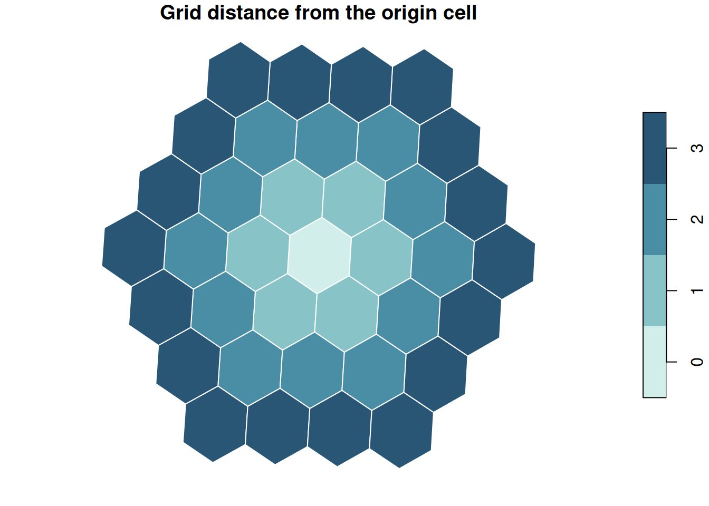
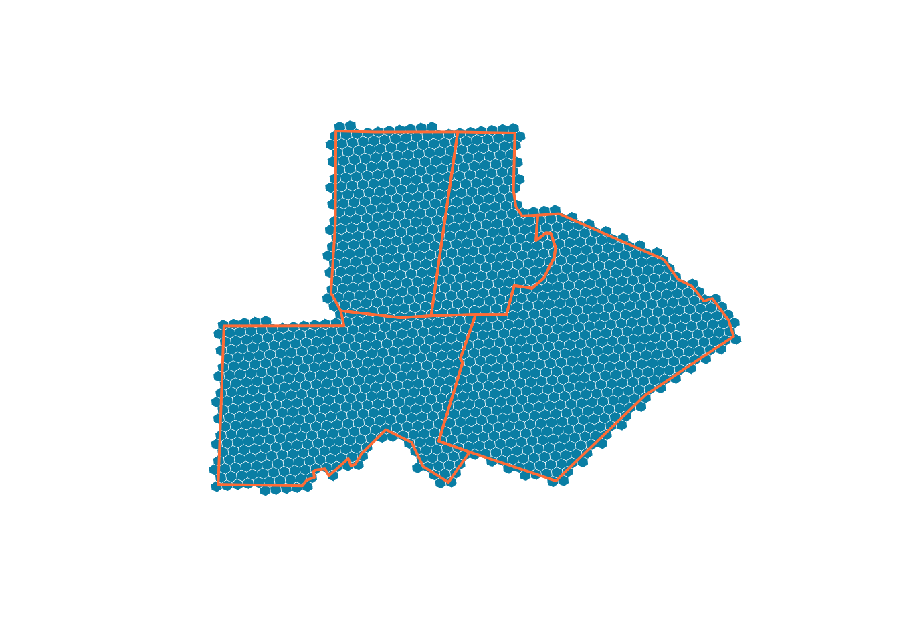

Getting started
{duckh3} provides fast, memory-efficient functions for working with the H3 hierarchical indexing system in R. It wraps the DuckDB H3 community extension and integrates with {duckspatial}, {dplyr} and {sf}, so you can index, aggregate and analyse large datasets with DuckDB while staying in your usual R workflow.
H3 divides the globe into hexagonal cells at 16 resolutions (0 to 15). Each cell has a unique 64-bit index, and every cell has one parent at a coarser resolution and several children at finer ones. That makes H3 useful for spatial binning, joins and neighbourhood analysis without needing any geometry at all.
Let’s start by loading the packages we need:
Installation
Install the stable release from CRAN:
# install.packages("pak")
pak::pak("duckh3")Or the latest GitHub version:
pak::pak("Cidree/duckh3")Setting up a connection
Every {duckh3} function runs inside a DuckDB connection with the h3 and spatial extensions loaded. Before using the package, create the default connection with ddbh3_default_conn(). It installs and loads the extensions (the first time it downloads them), registers the {duckh3} SQL macros, and stores the connection so other functions can find it:
ddbh3_default_conn(threads = 1)The default connection is shared with {duckspatial}, so both packages operate on the same database. If you want a separate database (for example, a file on disk), create your own connection with ddbh3_create_conn() and pass it through the conn argument:
conn <- ddbh3_create_conn(threads = 1)Note
H3 indexes are unsigned 64-bit integers. {duckh3} connections use
bigint = "integer64"so these values are never rounded. If you make a connection yourself withduckdb::dbConnect(), setbigint = "integer64"too, or store indexes as strings.
Naming conventions
All functions start with ddbh3_ (DuckDB H3), and the name says what they take and what they return:
| Pattern | Description |
|---|---|
ddbh3_lonlat_to_*() |
From longitude/latitude columns |
ddbh3_points_to_*() |
From spatial point geometries |
ddbh3_polygons_to_*(), ddbh3_lines_to_*()
|
From polygons or lines (polyfill) |
ddbh3_h3_to_*() |
From H3 cells to other representations |
ddbh3_vertex_to_*(), ddbh3_edge_to_*()
|
From H3 vertexes and directed edges |
ddbh3_get_*() |
Get a property of a cell (resolution, parent, area…) |
ddbh3_is_*() |
Check a property of an index (valid, pentagon…) |
The suffix gives the output: *_to_h3() returns an H3 index, *_to_spatial() returns hexagon geometries, and *_to_lon() / *_to_lat() return the coordinates of the cell centre.
From coordinates to H3 cells
H3 does not need spatial data. Any table with longitude and latitude columns is a valid input. {duckh3} ships a small example dataset of 100 points:
points_tbl <- read.csv(
system.file("extdata/example_pts.csv", package = "duckh3"),
row.names = 1
)
head(points_tbl)
#> id lat lon category
#> 1 1 -43.06925 16.192548 B
#> 2 2 29.18512 61.932969 C
#> 3 3 -20.68259 51.259176 C
#> 4 4 50.85681 -14.043806 B
#> 5 5 -57.62037 8.706529 C
#> 6 6 -56.21054 21.491229 Bddbh3_lonlat_to_h3() adds a column with the H3 index of the cell that contains each point. Columns are called lon and lat by default; use the lon and lat arguments if yours have other names.
points_h3 <- ddbh3_lonlat_to_h3(points_tbl, resolution = 5)
points_h3
#> # A query: ?? x 5
#> # Database: DuckDB 2.0.1 [unknown@Linux 7.0.0-1020-azure:R 4.6.2/:memory:]
#> id lat lon category h3string
#> <int> <dbl> <dbl> <chr> <chr>
#> 1 1 -43.1 16.2 B 85d02dcffffffff
#> 2 2 29.2 61.9 C 854221affffffff
#> 3 3 -20.7 51.3 C 85a20e8bfffffff
#> 4 4 50.9 -14.0 B 85181c6ffffffff
#> 5 5 -57.6 8.71 C 85e6cecffffffff
#> 6 6 -56.2 21.5 B 85e69d23fffffff
#> 7 7 -33.7 -17.0 C 85c18807fffffff
#> 8 8 -32.7 -31.9 A 85c52b37fffffff
#> 9 9 -7.39 39.0 C 857b6b57fffffff
#> 10 10 10.0 -89.9 A 856d424bfffffff
#> # ℹ more rowsThe result is a lazy table: the query has been defined in DuckDB, but no data has been brought into R. This lets you chain several operations and have DuckDB optimise them together. Use collect() (or dplyr::pull(), as.data.frame()…) when you need the data in memory:
points_h3 |>
collect() |>
head()
#> # A tibble: 6 × 5
#> id lat lon category h3string
#> <int> <dbl> <dbl> <chr> <chr>
#> 1 1 -43.1 16.2 B 85d02dcffffffff
#> 2 2 29.2 61.9 C 854221affffffff
#> 3 3 -20.7 51.3 C 85a20e8bfffffff
#> 4 4 50.9 -14.0 B 85181c6ffffffff
#> 5 5 -57.6 8.71 C 85e6cecffffffff
#> 6 6 -56.2 21.5 B 85e69d23fffffffBy default indexes are returned as strings (h3string). You can request the UBIGINT form instead, which is faster and smaller, and convert between both formats at any time:
points_bigint <- ddbh3_lonlat_to_h3(
points_tbl,
resolution = 5,
new_column = "h3bigint",
h3_format = "bigint"
)
points_bigint |>
ddbh3_bigint_to_strings(h3 = "h3bigint") |>
select(id, h3bigint, h3string) |>
collect() |>
mutate(h3bigint = as.character(h3bigint))
#> # A tibble: 100 × 3
#> id h3bigint h3string
#> <int> <chr> <chr>
#> 1 1 602641073348542463 85d02dcffffffff
#> 2 2 600142149706579967 854221affffffff
#> 3 3 601829684233109503 85a20e8bfffffff
#> 4 4 599402917115461631 85181c6ffffffff
#> 5 5 603039165277274111 85e6cecffffffff
#> 6 6 603035751852015615 85e69d23fffffff
#> 7 7 602383390343167999 85c18807fffffff
#> 8 8 602447381060911103 85c52b37fffffff
#> 9 9 601149965930070015 857b6b57fffffff
#> 10 10 600900854605676543 856d424bfffffff
#> # ℹ 90 more rowsVectorized mode
When you pass a plain character vector instead of a table (and leave conn = NULL), {duckh3} works like a regular vectorised R function and returns a vector:
cells <- c("85283473fffffff", "8928308280fffff", "not-an-index")
ddbh3_is_h3(cells)
#> [1] TRUE TRUE FALSE
ddbh3_get_resolution(cells[1:2])
#> [1] 5 9This is handy for quick checks. Note that numeric vectors are rejected because doubles cannot store every H3 index exactly; use character strings or bit64::integer64 instead.
Output types
Functions that return geometries, like ddbh3_h3_to_spatial(), return a duckspatial_df by default: a lazy table with a geometry column that {duckspatial} functions understand.
hex_ddbs <- ddbh3_h3_to_spatial(points_h3)
class(hex_ddbs)
#> [1] "duckspatial_df" "tbl_duckdb_connection" "tbl_dbi"
#> [4] "tbl_sql" "tbl_lazy" "tbl"Use mode = "sf" to get an sf object directly. You can also change the default for the whole session with duckspatial::ddbs_options(mode = "sf").
hex_sf <- ddbh3_h3_to_spatial(points_h3, mode = "sf")
hex_sf
#> Simple feature collection with 100 features and 5 fields
#> Geometry type: POLYGON
#> Dimension: XY
#> Bounding box: xmin: -97.98352 ymin: -60.07585 xmax: 94.87904 ymax: 59.9724
#> Geodetic CRS: WGS 84
#> First 10 features:
#> id lat lon category h3string
#> 1 1 -43.069252 16.192548 B 85d02dcffffffff
#> 2 2 29.185117 61.932969 C 854221affffffff
#> 3 3 -20.682592 51.259176 C 85a20e8bfffffff
#> 4 4 50.856814 -14.043806 B 85181c6ffffffff
#> 5 5 -57.620368 8.706529 C 85e6cecffffffff
#> 6 6 -56.210542 21.491229 B 85e69d23fffffff
#> 7 7 -33.702164 -17.008820 C 85c18807fffffff
#> 8 8 -32.718974 -31.879051 A 85c52b37fffffff
#> 9 9 -7.388245 39.031393 C 857b6b57fffffff
#> 10 10 10.011989 -89.915075 A 856d424bfffffff
#> geometry
#> 1 POLYGON ((16.06751 -43.0320...
#> 2 POLYGON ((61.85553 29.20021...
#> 3 POLYGON ((51.1028 -20.67532...
#> 4 POLYGON ((-14.14365 51.0060...
#> 5 POLYGON ((8.82639 -57.58741...
#> 6 POLYGON ((21.54471 -56.2418...
#> 7 POLYGON ((-17.049 -33.68473...
#> 8 POLYGON ((-31.98893 -32.672...
#> 9 POLYGON ((39.0542 -7.415297...
#> 10 POLYGON ((-89.9927 10.07348...Finally, any function can write its result to a table in a DuckDB connection with the name argument, instead of returning it. Here we store the points in our own connection, then index the table by name:
DBI::dbWriteTable(conn, "points", points_tbl)
ddbh3_lonlat_to_h3(
"points",
resolution = 7,
conn = conn,
name = "points_h3"
)
#> ✔ Query successful
DBI::dbListTables(conn)
#> [1] "points" "points_h3"Using {duckh3} inside mutate()
{duckh3} registers DuckDB macros with the same names as the R functions. On lazy tables you can call them directly inside dplyr::mutate(), filter() or summarise(), and {dbplyr} sends them to DuckDB as SQL. This makes long pipelines very concise:
points_lazy <- dplyr::copy_to(
duckspatial::ddbs_default_conn(),
points_tbl,
name = "points_lazy",
overwrite = TRUE
)
points_lazy |>
mutate(
h3 = ddbh3_lonlat_to_h3(lon, lat, 6),
h3parent = ddbh3_get_parent(h3, 2),
area_km2 = ddbh3_get_area(h3) / 1e6
) |>
select(id, h3, h3parent, area_km2)
#> # A query: ?? x 4
#> # Database: DuckDB 2.0.1 [unknown@Linux 7.0.0-1020-azure:R 4.6.2/:memory:]
#> id h3 h3parent area_km2
#> <int> <chr> <chr> <dbl>
#> 1 1 86d02dcc7ffffff 82d02ffffffffff 34.4
#> 2 2 864221ac7ffffff 824227fffffffff 37.2
#> 3 3 86a20e8f7ffffff 82a20ffffffffff 36.7
#> 4 4 86181c6cfffffff 82181ffffffffff 37.1
#> 5 5 86e6cece7ffffff 82e6cffffffffff 33.6
#> 6 6 86e69d237ffffff 82e69ffffffffff 30.0
#> 7 7 86c188077ffffff 82c18ffffffffff 43.0
#> 8 8 86c52b36fffffff 82c52ffffffffff 37.7
#> 9 9 867b6b577ffffff 827b6ffffffffff 41.0
#> 10 10 866d424afffffff 826d47fffffffff 35.6
#> # ℹ more rowsWarning
Macros only exist inside DuckDB, so they work on lazy tables (
tbl_duckdb_connection,duckspatial_df), not on regular data frames. For data frames, use the exported R functions.
Hierarchy
Each H3 cell has one parent at every coarser resolution and many children at every finer resolution. Moving up the hierarchy is a quick way to aggregate data:
points_h3 |>
ddbh3_get_parent(resolution = 1) |>
count(h3parent, sort = TRUE)
#> # A query: ?? x 2
#> # Database: DuckDB 2.0.1 [unknown@Linux 7.0.0-1020-azure:R 4.6.2/:memory:]
#> # Ordered by: desc(n)
#> h3parent n
#> <chr> <int64>
#> 1 818e7ffffffffff 3
#> 2 81a23ffffffffff 2
#> 3 81defffffffffff 2
#> 4 81537ffffffffff 2
#> 5 81ccfffffffffff 2
#> 6 81193ffffffffff 2
#> 7 813b7ffffffffff 2
#> 8 81e6fffffffffff 2
#> 9 810e3ffffffffff 2
#> 10 81423ffffffffff 1
#> # ℹ more rowsMoving down returns several cells per input. By default the result is unnested (one row per child); use nested = TRUE to keep a list column instead:
points_h3 |>
head(1) |>
ddbh3_get_children(resolution = 6) |>
select(id, h3string, h3children)
#> # A query: ?? x 3
#> # Database: DuckDB 2.0.1 [unknown@Linux 7.0.0-1020-azure:R 4.6.2/:memory:]
#> id h3string h3children
#> <int> <chr> <chr>
#> 1 1 85d02dcffffffff 86d02dcc7ffffff
#> 2 1 85d02dcffffffff 86d02dccfffffff
#> 3 1 85d02dcffffffff 86d02dcd7ffffff
#> 4 1 85d02dcffffffff 86d02dcdfffffff
#> 5 1 85d02dcffffffff 86d02dce7ffffff
#> 6 1 85d02dcffffffff 86d02dcefffffff
#> 7 1 85d02dcffffffff 86d02dcf7ffffffddbh3_compact() does the reverse: it replaces each complete set of children with their parent, which is a compact way to store large areas. ddbh3_uncompact() expands them back to a single resolution.
Neighbours and distances
ddbh3_grid_disk() returns every cell within k steps of a cell (the “k-ring”), one row per neighbour. ddbh3_grid_distance() then gives the number of steps between two cells. Combined with ddbh3_h3_to_spatial(), we can map how far each neighbour is from the origin:
disk <- points_h3 |>
head(1) |>
ddbh3_grid_disk(k = 3) |>
ddbh3_grid_distance(h3start = "h3string", h3end = "h3neighbors") |>
ddbh3_h3_to_spatial(h3 = "h3neighbors", mode = "sf")
plot(
disk["grid_distance"],
pal = hcl.colors(4, "Teal", rev = TRUE),
border = "white",
main = "Grid distance from the origin cell"
)
Grid distances can only be computed between cells that are reasonably close; for cells too far apart the result is NA.
Cell size varies with latitude, so H3 cells of the same resolution do not all have the same area. ddbh3_get_area() measures each cell, and ddbh3_get_hexagon_area_avg() gives the average area at a resolution:
points_h3 |>
ddbh3_get_area(unit = "km^2") |>
summarise(
min_area = min(h3area, na.rm = TRUE),
mean_area = mean(h3area, na.rm = TRUE),
max_area = max(h3area, na.rm = TRUE)
)
#> # A query: ?? x 3
#> # Database: DuckDB 2.0.1 [unknown@Linux 7.0.0-1020-azure:R 4.6.2/:memory:]
#> min_area mean_area max_area
#> <dbl> <dbl> <dbl>
#> 1 158. 260. 305.
ddbh3_get_hexagon_area_avg(resolution = 5, unit = "km^2")
#> [1] 252.9039From polygons to H3 cells
ddbh3_polygons_to_h3() and ddbh3_polygons_to_spatial() fill polygons with H3 cells (polyfill). They accept sf objects, duckspatial_df objects or tables in a connection. Here we use the North Carolina counties that ship with {sf}:
nc <- st_read(system.file("shape/nc.shp", package = "sf"), quiet = TRUE) |>
st_transform(4326)
nc_subset <- nc[nc$NAME %in% c("Wake", "Durham", "Orange", "Chatham"), ]
nc_hex <- ddbh3_polygons_to_spatial(nc_subset, resolution = 7, mode = "sf")
plot(st_geometry(nc_hex), col = "#0A7EA4", border = "white", lwd = 0.3)
plot(st_geometry(nc_subset), border = "#FF6B35", lwd = 2, add = TRUE)
The containment argument controls which cells are kept: "overlap" (default) keeps any cell that touches the polygon, while "center" keeps only cells whose centre falls inside it. For lines, use ddbh3_lines_to_h3() and ddbh3_lines_to_spatial().
Learn more
This vignette covered the main building blocks. The function reference lists everything else, grouped by topic: vertexes, directed edges, local IJ coordinates, icosahedron faces and more. For spatial operations on the resulting hexagons (joins, areas, interpolation), see {duckspatial}.